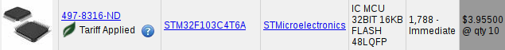

Many vendors sell a PCB containing the STM32F10C8T6 ARM microcontroller. Ebay
prices including shipping are typically $2 each or even a bit less. For comparison
the chip alone is well over $3 in quantity 10 from US distributors, including the
trade war tariff.

This is an embedded ARM chip, targeted at the same markets as the ATmega328 in an Arduino UNO or similar board.
Advantages over an UNO copy include
And of course some disadvantages
One option is the STM32CubeMX GUI from ST This free tool from ST has a GUI to select the peripherals in use, set clock rates, etc. It then generates skeleton code to configure everything and provides subroutines for I/O.
Another option is the libopencm3 Library. This is an old-school programming environment: it's a library to call from your own program, written with your own editor.
The stm32duino project has done a lot of work to integrate the stm32 family of chips into the Arduino framework.
If you search online, people typically call this board the “Blue Pill”, from the movie, so searching online for bluepill and arduino finds lots of related information.
www.onetransistor.eu/2017/11/stm32-bluepill-arduino-ide.html has good notes on the board and how to use it with the Arduino IDE.
There is also information at wiki.stm32duino.com/index.php, but personally I found the onetransistor.eu page to be more useful.
To use it with the Arduino GUI, you need to